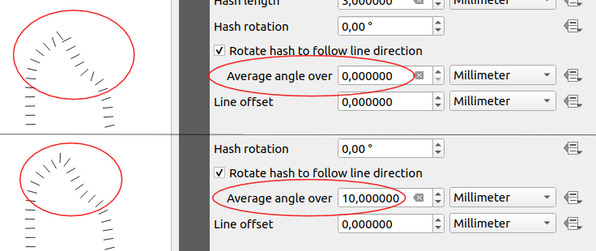
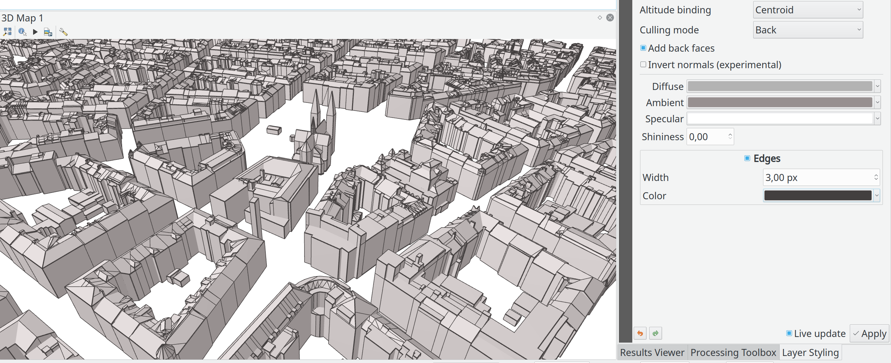
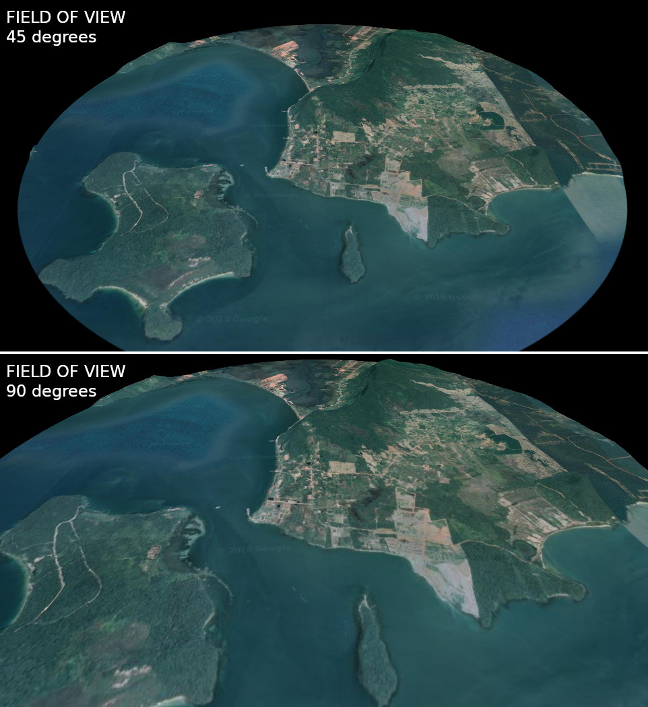
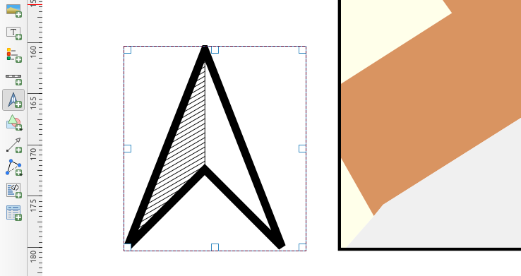
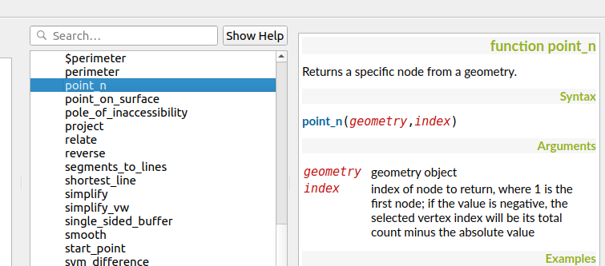
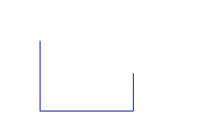
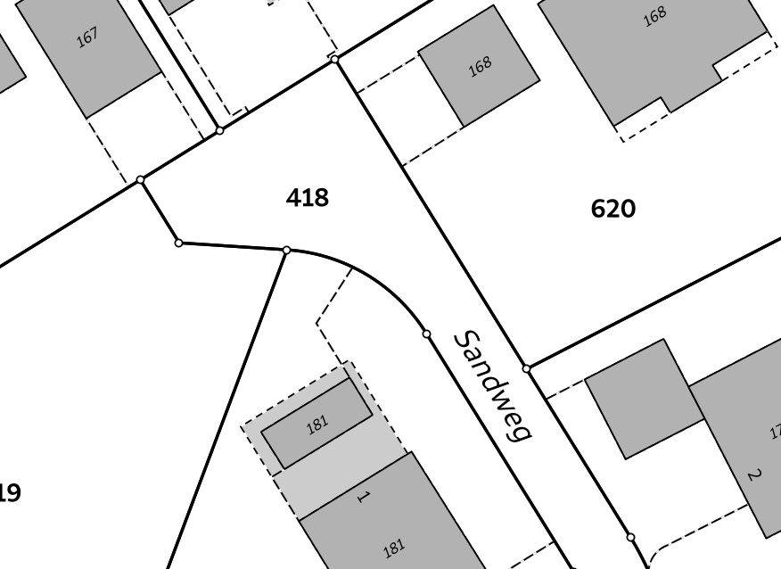

Log met wijzigingen voor QGIS 3.8¶
QGIS 3.8 brengt een uitgebreide lijst nieuwe wijzigingen en heel veel polijsten van bestaande mogelijkheden - de hoogtepunten daarvan zullen we hier proberen te behandelen. Zoals altijd herinneren we u er aan dat QGIS een open bron project is en vragen u om als het mogelijk is ons werk te ondersteunen door donaties, sponsoring of bijdragen aan de documentatie van de code, website, enzovoort.QGIS
Dankwoord
We willen onze dank uitspreken aan alle ontwikkelaars schrijvers van documentatie, testers en alle andere mensen die vrijwillig hun tijd en inspanningen ter beschikking stellen (of mensen sponsoren om dat te kunnen doen). Vanuit de QGIS gemeenschap hopen we dat u van deze uitgave zult genieten! Als u tijd of geld wilt doneren of op een andere wijze betrokken wilt zijn in het opwaarderen van QGIS, kijk dan ook eens op qgis.org en help een handje!
QGIS wordt ondersteund door donoren en dragende leden. Een huidige lijst van donoren die grote en kleine bijdragen hebben gegeven aan het project kan worden bekeken op onze lijst met donoren. Als u een officieel dragend lid voor het project zou willen worden, bekijk dan onze pagina voor dragende lidmaatschappen voor details. Ondersteunen van QGIS helpt ons om fondsen te verkrijgen voor onze halfjaarlijkse ontmoetingen van ontwikkelaars, de infrastructuur van het project te onderhouden en inspanningen voor het oplossen van problemen te financieren.. Een volledige lijst van huidige dragende leden wordt hieronder weergegeven - een welgemeend Bedankt voor al onze ondersteuners!
QGIS is gratis software en u bent niet verplicht om maar iets te betalen voor het gebruiken ervan - in feite willen we mensen, wijd en zijd verspreid, aanmoedigen om het te gebruiken ongeacht uw financiële of sociale status - wij geloven dat het uitrusten van mensen met gereedschappen voor het maken van ruimtelijke beslissingen zal resulteren in een betere wereld voor de gehele mensheid.
- Kaartgereedschap
- Gebruikersinterface
- Symbologie
- Mogelijkheid: Tekenreeksen met meerdere tekens voor markeringen lettertypen
- Mogelijkheid: Factor afstand label voor renderer Puntverplaatsing
- Mogelijkheid: Symbooltype Hash-lijn
- Mogelijkheid: Gemiddelde hoeken lijnen voor symbologie Markering en Symbolen-lijn
- Mogelijkheid: Instellingen voor verschuiving van symboollagen Puntpatroonvulling
- Mogelijkheid: Live effect Vervagen straal is nu hi-dpi vriendelijk
- Labels
- 3D-objecten
- Afdruklay-outs
- Expressies
- Mogelijkheid: Ondersteuning voor sorteren op voor functies voor samenvoegen
- Mogelijkheid: Vereenvoudigde variant van functie “attribute”
- Mogelijkheid: Punten ophalen van einde van geometerieën
- Mogelijkheid: Nieuwe functies voor expressies
- Mogelijkheid: Nieuwe methode voor samenvoegen: concatenate_unique
- Digitaliseren
- Formulieren en widgets
- Processing
- Mogelijkheid: Optie “Laagstijlen opslaan naar GeoPackage” voor algoritme Pakketlagen toegevoegd
- Mogelijkheid: Analyse Overlappen
- Mogelijkheid: Afronden van waarden toestaan in Uitnemen/clippen op bereik
- Mogelijkheid: Nieuwe opties voor automatisch vullen van batch Processing
- Mogelijkheid: XYZ-rastertegels maken
- Mogelijkheid: Wederopstanding van de provider OTB
- Mogelijkheid: Variabelen voor expressies voor een model
- Mogelijkheid: Verbeterde Grafische modellen bouwen UI
- Mogelijkheid: Algoritmes met bekende problemen vlaggen
- Mogelijkheid: Raster Booleaanse logische OF/EN algoritmes
- Mogelijkheid: Nieuwe typen invoerparameters voor afdruklay-outs en items van afdruklay-out
- Mogelijkheid: Nieuw type parameter voor schalen van kaarten
- Mogelijkheid: Verbeterde afhandeling van parameter “punt”
- Mogelijkheid: Nieuw algoritme “Bereik lay-outkaart afdrukken naar laag”
- Mogelijkheid: Velden X/Y toevoegen aan laag
- Mogelijkheid: Algoritme “Koppel attributen op dichtstbijzijnde”
- Mogelijkheid: Algoritme Grass r.geomorphon
- Mogelijkheid: GDAL algoritme Pansharpening
- Mogelijkheid: Parameter voor voorvoegsel nieuwe velden voor algoritmes vooroverleggen
- Browser
- Algemeen
- Gegevensproviders
- Mogelijkheid: provider Postgres: ondersteuning toegevoegd voor gemaakte kolommen voor identiteit
- Mogelijkheid: Ondersteuning lijst tekenreeksen voor compatibele lagen
- Mogelijkheid: Veel verbeterde afhandeling voor afhandeling ArcGIS MapServer
- Mogelijkheid: SQL Server: afhandelen van geometrieën v2, inclusief gebogen en geometrieën Z/M
- Mogelijkheid: WMS: Één filter definiëren voor verscheidene lagen
- Mogelijkheid: Ondersteuning voor bogen bij exporteren naar DXF
- QGIS Server
- Plug-ins
- Programmeerbaarheid
- Belangrijke reparaties
- Mogelijkheid: Reparaties van problemen door Alessandro Pasotti
- Mogelijkheid: Reparaties van problemen door Alexander Bruy
- Mogelijkheid: Reparaties van problemen door Victor Olaya
- Mogelijkheid: Reparaties van problemen door Even Rouault
- Mogelijkheid: Reparaties van problemen door Denis Rouzaud
- Mogelijkheid: Reparaties van problemen door Peter Petrik
- Mogelijkheid: Reparaties van problemen door Loïc Bartoletti
Kaartgereedschap¶
Mogelijkheid: Cartesiaanse maateenheden forceren bij meten van afstanden/gebieden¶
In 3.8 hebben we een optie toegevoegd aan het Gereedschap Meten dat Cartesiaanse maateenheden forceert voor metingen van afstanden of gebieden. Eerder gebruikten de gereedschappen voor meten altijd ellipsoïde/geodesische berekeningen voor gebied en afstand, maar er zijn gevallen waarin dat niet gewenst is en gebruikers in plaats daarvan pure Cartesiaanse berekeningen eisen.

Deze mogelijkheid werd mogelijk gemaakt door Oslandia
Deze mogelijkheid werd ontwikkeld door Loïc Bartoletti (Oslandia)
Gebruikersinterface¶
Mogelijkheid: Knop Opslaan naar sjabloon¶
Waar QGIS al vele jaren ondersteuning voor Sjablonen voor projecten biedt, hebben we dit in 3.8 verbeterd en het voor gebruikers veel eenvoudiger gemaakt om nieuwe sjablonen te maken. Gebruikers kunnen nu een nieuw sjabloon uit hun huidige project maken door te selecteren “Opslaan naar -> Sjablonen” in het menu “Project”.
Deze mogelijkheid werd ontwikkeld door Matthias Kuhn (OPENGIS.ch)
Mogelijkheid: Verbeterd gedrag “Zoom naar eigen resolutie”¶
We hebben de actie “Zoom naar eigen resolutie” verbeterd zodat die nu correct werkt met getegelde (bijv. WMTS/XYZ/ArcGIS MapServer) lagen, door te zoomen naar de dichtstbijzijnde eigen tegelresolutie. In aanvulling daarop tweakten we het renderen van de tegels zodat pixel-perfect renderen optreedt als de kaart wordt bekeken met een eigen tegelresolutie. Het resultaat: super-heldere kaart renderen bij gebruiken van getegelde laagbronnen!

Mogelijkheid: Lagen slepen en neerzetten in widgets Kaartlagen¶
We ondersteunen nu, om het gebruiken van grote projecten van QGIS te verbeteren, direct slepen en neerzetten van lagen vanuit de inhoud van de projecttabel naar elk widget dat vraagt om het selecteren van een laag (bijv. algoritmes van Processing). Voor complexe projecten, lokaliseren van een laag in de inhoud van de tabel en slepen is veel gemakkelijker dan het kiezen uit het combinatievak van de vlakke widget van de lagen!
Aanvullend, voor algoritmes van Processing, kunnen lagen direct uit het paneel Browser worden gesleept voor keuzes voor lagen om in te voeren.
Deze mogelijkheid werd ontwikkeld door: Nyall Dawson (North Road)
Symbologie¶
Mogelijkheid: Tekenreeksen met meerdere tekens voor markeringen lettertypen¶
Waar QGIS al lange tijd ondersteuning beidt voor het renderen van punten met op lettertypen gebaseerde markeringen, hebben we deze functionaliteit in 3.8 verbeterd en bieden nu de mogelijkheid om tekenreeksen met meerdere tekens te renderen! En omdat we er altijd naar streven om de interface voor de toepassing QGIS zo gebruikersvriendelijk en plezierig als mogelijk te maken, hebben we ook de mogelijkheid te baat genomen om de UI voor markeringen van lettertypen te tweaken en een aantal frustrerende problemen met de gebruikersinterface, waar eerdere versies last van hadden, op te lossen.

Deze mogelijkheid werd ontwikkeld door Mathieu Pellerin
Mogelijkheid: Factor afstand label voor renderer Puntverplaatsing¶
Een andere aanvulling op de nieuwe mogelijkheden voor symbologie in 3.8 is een nagelnieuw besturingselement voor een factor labelafstand voor markeringen van Puntverplaatsing. Deze optie maakt het mogelijk verplaatste markeringen te plaatsen op een afstand die is gebaseerd op de diagonale grootte van de feitelijke markering, in plaats op een vaste afstand.

Deze mogelijkheid werd ontwikkeld door henrik
Mogelijkheid: Symbooltype Hash-lijn¶
QGIS houdt van cartografie, en we weten dat u er van houdt prachtige kaarten te maken! We hebben dus een nagelnieuwe optie “Symbolen-lijn” voor lijnsymbologie toegevoegd. Dit type lijnsymbool is ontworpen om het type symboollaag voor ArcGIS Hash Line na te bootsen, en maakt het mogelijk een herhalend lijnsegment te tekenen over de lengte van een object (met een lijn-subsymbool gebruikt om elk individueel segment te renderen).
Alle beschikbare opties voor de bestaande symboollaag Markering zijn ook beschikbaar voor symbolen-lijnen, - bijv. eerste/laatste punt, middelpunten, regelmatige intervallen, data-bepaalde intervallen, etc. De lengte en hoek van de symbolen-lijn kan ook data-bepaalde ‘override’ hebben, die per lijnsegment worden geëvalueerd, wat het mogelijk maakt dat de symbolen-lijn van grootte en hoek wijzigt over de lengte van één enkel gerenderd object.

Deze mogelijkheid werd mogelijk gemaakt door anonymous
Deze mogelijkheid werd ontwikkeld door: Nyall Dawson (North Road)
Mogelijkheid: Gemiddelde hoeken lijnen voor symbologie Markering en Symbolen-lijn¶
In eerdere versies van QGIS, wanneer een markeringslijn werd gerenderd met intervallen of geplaatst op het middelpunt, werden de hoeken van de symbolen bepaald door de exacte oriëntatie van de lijn op de positie van het symbool te nemen. Dit leidt vaak tot ongewenste effecten bij het renderen, waar kleine “kartelingen” of hoeken in lijnen die precies op de plaats van het symbool voorkomen er voor zorgen dat de markering wordt georiënteerd onder een hele andere hoek dan wat het oog verwacht te zien.
We willen dat uw kaarten zo mooi mogelijk zijn, dus in QGIS 3.8 wordt de hoek van de markering in plaats daarvan berekend over een gespecificeerde afstand aan beide zijden van het symbool. Bijv. voor het middelen van de hoek van de lijn over 4mm betekent dat we de punten langs de lijn op 2mm van elke kant van de plaatsing van het lijnsymbool nemen, en die gebruiken in plaats van de lijnhoek voor dat symbool te berekenen. Dit heeft het effect van gladder maken (of verwijderen!) van hele kleine afwijkingen van de lijnrichting in zijn geheel, resulterend in een veel nettere visuele oriëntatie van markeringen of symbolen-lijnen.
Net als voor alle instellingen van symbolen kunnen de afstand voor het gladder maken van de gemiddelde hoek worden ingesteld in mm/pixels/kaarteenheden/etc, en ondersteunt data-bepaalde waarden. Gesloten ringen overwegen ook door te lopen langs deze gemiddelde hoeken vanuit het start-/eindpunt.
Deze optie is beschikbaar voor zowel het symbool Markering als de nieuwe typen symbolen-lijn.

Deze mogelijkheid werd mogelijk gemaakt door anonymous
Deze mogelijkheid werd ontwikkeld door: Nyall Dawson (North Road)
Mogelijkheid: Instellingen voor verschuiving van symboollagen Puntpatroonvulling¶
Om de nieuwe opties voor symbologie, die we hebben toegevoegd in 3.8, af te ronden heeft het symbooltype Puntpatroonvulling een nieuwe instelling die het mogelijk maakt de markeringen in het patroon te verschuiven met een vooringestelde (of data-bepaalde) hoeveelheid. Dit opent de deur voor vele mogelijkheden voor opmaken die in eerdere versies niet mogelijk waren, en verder onze compatibiliteit met geconverteerde symbool- en laagstijlen van ArcGIS vergroot.

Deze mogelijkheid werd ontwikkeld door Mathieu Pellerin
Mogelijkheid: Live effect Vervagen straal is nu hi-dpi vriendelijk¶
QGIS 3.8 brengt een zeer gewenste reparatie voor het effect vervagen van straal voor de laag (alias sterkte). In eerdere versies van QGIS hield deze instelling voor vervagen geen rekening met de DPI bij het renderen van de kaart — wat resulteerde in onnauwkeurige effecten bij het renderen bij het exporteren van kaartvensters/lay-outs op hoge resoluties. In 3.8 werd dit gerepareerd en de export van kaarten met hoge resolutie komt nu overeen met de weergegeven resultaten in het kaartvenster en zijn volledig onafhankelijk van de resolutie.
Deze mogelijkheid werd ontwikkeld door Mathieu Pellerin
Labels¶
Mogelijkheid: Geometrie-generatoren voor labelen¶
Dit is echt een grote! Tijdens de samenkomst van de ontwikkelaars in La Coruña nam Matthias Kuhn de gelegenheid om een veelgevraagde mogelijkheid te implementeren in ons programma voor labelen: ondersteuning voor Geometrie-generator.
Net als Geometrie-generatoren voor symbolen staan we nu toe dat paden en posities voor labels worden berekend met dynamisch geëvalueerde geometrie-expressies. U kunt uw voordeel doen met de rijke ondersteuning voor verwerking van geometrie dat het programma van QGIS voor expressies laat zien, en dat gebruiken om ALLE soorten voorbereidende verwerking voor uw objecten uit te voeren, voordat zij worden gelabeld. Wilt u labels plaatsen rondom het begin- of eindpunt van geometrieën lijn? Wat denkt u van dynamisch glad maken en vereenvoudigen van het pad gebruikt voor het labelen van objecten voor rivieren, gebaseerd op de huidige schaal van de kaart? Wat dacht u van het bufferen van polygoon-objecten intern met een percentage van hun gebied, en dan labelen langs de omtrek van dit gekrompen gebied? Nu is dit ALLEMAAL mogelijk, dankzij de kracht van geometrie-generatoren voor labelen!

Deze mogelijkheid werd mogelijk gemaakt door QGIS User Group Switzerland
Deze mogelijkheid werd ontwikkeld door Matthias Kuhn (OPENGIS.ch)
Mogelijkheid: Kaartgereedschappen voor labels gebruiken nu klik-klik-gedrag¶
Net als de andere gereedschappen voor digitaliseren en voor kaarten van QGIS, gebruiken de gereedschappen “Label verplaatsen” en “Label draaien” nu het standaard gedrag: met links klikken om bewerken te beginnen, met links klikken om te beëindigen. Consistentie is goed!
3D-objecten¶
Mogelijkheid: Brede lijnen en accentueren van randen van polygonen¶
Net als in alle recente uitgaven van QGIS hebben we in version 3.8 de mogelijkheden voor #D renderen significant opgewaardeerd. Nieuwe mogelijkheden voor 3D-rendering omvatten:
- Configureerbare breedte van lijnen (in schermeenheden) voor “eenvoudige” 3D-lijnen (in eerdere versies waren zij altijd 1 px breed)
- Optioneel accentueren van randen van 3D-polygonen

Deze mogelijkheid werd mogelijk gemaakt door Andreas Neumann
Deze mogelijkheid werd ontwikkeld door Martin Dobias (Lutra Consulting)
Mogelijkheid: 3D-animaties exporteren¶
Een andere spannende wijziging die we hebben geïntroduceerd in QGIS 3.8 is de mogelijkheid om uw 3D-animaties te exporteren! Deze worden geëxporteerd als een serie afbeeldingen PNG/JPG/…, die gemakkelijk kunnen worden samengevoegd tot .avi of andere standaard videobestanden (met externe programma’s).

Deze mogelijkheid werd mogelijk gemaakt door Northumberland National Park Authority
Deze mogelijkheid werd ontwikkeld door Peter Petrik (Lutra Consulting)
Mogelijkheid: Terrein van online bronnen¶
Met deze nieuwe mogelijkheid voor versie 3.8, kunt u nu direct terreinen voor uw 3D-scenes ophalen vanaf online bronnen (bijv. tegels die worden gehost op AWS). Geen rasters meer als bronnen en het voorbereiden daarvan met DEM, eenvoudigweg deze optie inschakelen en out-of-the-box prachtige 3D-scenes bekijken!
Deze mogelijkheid werd mogelijk gemaakt door QGIS gemeenschap door middel van crowd-funding: More QGIS 3D
Deze mogelijkheid werd ontwikkeld door Martin Dobias (Lutra Consulting)
Mogelijkheid: Configuratie van veld voor hoek van weergave van camera¶
In QGIS 3.8, heeft het veld voor de weergave van de camera, waarmee 3D-scenes worden gerenderd, een nieuw te configureren veld voor instellingen van de weergave gekregen.

Deze mogelijkheid werd ontwikkeld door Mathieu Pellerin
Afdruklay-outs¶
Mogelijkheid: Evenredige verdeling van afstand tussen items¶
We hebben nieuwe gereedschappen toegevoegd voor het automatisch opnieuw positioneren van items, zodat de horizontale of verticale afstand tussen de items gelijk is, om gemakkelijker uw perfecte afdruklay-out voor QGIS te maken. Deze aanvulling rondt de bestaande opties voor het uitlijnen van items netjes af, en brengt meer van de kracht van specifieke toepassingen voor DTP direct in de ontwerper van afdruklay-out voor QGIS!
Deze mogelijkheid werd ontwikkeld door Matteo Nastasi
Mogelijkheid: Noordpijlen maken¶
We hebben geluisterd naar de terugkoppeling van gebruikers die aangaven dat de eerdere benadering voor het maken van noordpijlen in de afdruklay-out te moeilijk was, en hebben als consequentie daarvan een nieuwe knop gemaakt in de ontwerper voor afdruklay-out om direct noordpijlen te maken. Deze knop is een sneltoets voor het toevoegen van een item afbeelding, het in te stellen als een afbeelding voor een noordpijl, en het te koppelen aan een kaart. Het eindresultaat is identiek, maar het is voor nieuwe gebruikers veel gemakkelijker te begrijpen als we het zichtbaar maken als een expliciet item “Noordpijl”!
Zels ervaren gebruikers zullen de nieuwe werkstroom waarderen, inclusief het automatisch koppelen van de rotatie van de afbeelding aan een logische standaard keuze voor de kaart (als een kaart is geselecteerd, wordt die gebruikt. Indien niet geselecteerd wordt het bovenste kaartitem onder de nieuw getekende noordpijl gebruikt. Als die er niet is, wordt de ‘verwijzingskaart’ voor de lay-out (of de grootste kaart) gebruikt als uitwijkmogelijkheid).

Deze mogelijkheid werd mogelijk gemaakt door: North Road
Deze mogelijkheid werd ontwikkeld door: Nyall Dawson (North Road)
Expressies¶
Mogelijkheid: Ondersteuning voor sorteren op voor functies voor samenvoegen¶
Omdat bepaalde expressies voor samenvoegen vereisen dat de resultaten in een bepaalde volgorde staan, maken we nu het beheren van de volgorde waarin objecten worden toegevoegd aan de samenvoeging bij het evalueren van de expressie, mogelijk.
Bijv. concatenate("Station",concatenator:=',', order_by:="Station") zal een komma gescheiden lijst met namen van stations geven in alfabetische volgorde, in plaats van in de volgorde van objecten van de laag.
Deze mogelijkheid werd mogelijk gemaakt door SMEC/SJ
Deze mogelijkheid werd ontwikkeld door: Nyall Dawson (North Road)
Mogelijkheid: Vereenvoudigde variant van functie “attribute”¶
Deze verbetering brengt een tweede variant voor de bestaande functie “attribute”. De functie “attribute” in eerdere uitgaven van QGIS vereiste zowel een doelobject als een naam van een attribuut te zijn gespecificeerd. De nieuwe versie is veel eenvoudiger, gebruikt automatisch het huidige object en vereist alleen de naam van een attribuut.
Bijv.
Eerder gedrag:
attribute($currentfeature, 'name' ) -> opgeslagen waarde in attribuut ‘name’ voor het huidige object
Verbeterd gedrag:
attribute( 'name' ) -> geeft waarde terug die is opgeslagen in attribuut ‘name’ voor het huidige object
Het is slechts een snellere verkorte versie!

Deze mogelijkheid werd mogelijk gemaakt door: North Road
Deze mogelijkheid werd ontwikkeld door: Nyall Dawson (North Road)
Mogelijkheid: Punten ophalen van einde van geometerieën¶
We hebben ondersteuning voor negatieve index toegevoegd aan de functies point_n(), angle_at_vertex(), en distance_to_vertex(), wat het mogelijk maakt achterwaarts punten op te halen vanaf het einde van een geometrie.

Deze mogelijkheid werd ontwikkeld door Mathieu Pellerin
Mogelijkheid: Nieuwe functies voor expressies¶
Zoals gewoonlijk brengt een nieuwe uitgave van QGIS heel veel nieuwe functies om te gebruiken met het programma voor expressies in QGIS. Deze nieuwe functies voegen verhoogde flexibiliteit en kracht toe aan het programma voor expressies, en overal in QGIS waar het wordt gebruikt. Deze ronde hebben we een nieuwe set functies toegevoegd die het super gemakkelijk maken bestandsnamen en -paden te bewerken.
Nieuwe functies voor expressies ontwikkeld door Nyall Dawson van North Road:
- base_file_name: Geeft de basisnaam van het bestand terug zonder de map of het achtervoegsel van het bestand.
- file_exists: Geeft true terug als een bestandspad bestaat
- file_name: Geeft de bestandsnaam uit een volledig pad terug
- file_path: Geeft de map/pad uit een volledig bestandspad terug
- file_size: Geeft de grootte van een bestand terug
- file_suffix: Geeft het achtervoegsel/extensie van een bestand terug
- file_exists: Geeft true terug als het bestandspad een map is
- file_exists: Geeft true terug als een bestandspad een bestand is
Nieuwe functies voor expressies ontwikkeld door Mathieu Pellerin van iMHere Asia:
- array_all: Geeft true terug als een array alle waarden van een opgegeven array bevat.
- concatenate_unique: Geeft alle unieke tekenreeksen terug uit een veld of expressie, samengevoegd door een scheidingsteken.
Mogelijkheid: Nieuwe methode voor samenvoegen: concatenate_unique¶
We hebben een nieuwe functie concatenate_unique() toegevoegd aan het programma voor expressies (en het algoritme voor Processing’s “aggregate”) voor ondersteuning bij het samenvoegen van alleen unieke waarden uit een lijst of set objecten.

Deze mogelijkheid werd ontwikkeld door Mathieu Pellerin
Digitaliseren¶
Mogelijkheid: Zwevend widget voor gevorderde invoer naast cursor¶
We hebben een optie toegevoegd om de huidige waarden afstand/hoek/X/Y als een zwevend venster naast de muiscursor weer te geven om de bestaande gereedschappen voor Geavanceerd digitaliseren gemakkelijker te gebruiken te maken.
Deze mogelijkheid werd mogelijk gemaakt door Kanton Schaffhausen
Deze mogelijkheid werd ontwikkeld door Olivier Dalang en OPENGIS.ch
Mogelijkheid: Geschakelde punten toevoegen op eindpunt¶
In QGIS 3.0 hebben we de mogelijkheid toegevoegd om een bestaand lijnobject te verlengen door te klikken op de indicatie “+” aan het begin of einde van lijnobjecten met het gebruiken van het gereedschap Knopen. Versie 3.8 breidt deze functionaliteit uit door het toevoegen van meer dan één punt met de knop “+” toe te staan.

Deze mogelijkheid werd mogelijk gemaakt door Kanton Schaffhausen
Deze mogelijkheid werd ontwikkeld door Olivier Dalang en OPENGIS.ch
Mogelijkheid: Verbeteringen aan bewerker voor punten¶
Voor deze uitgave verbeterden we de bewerker voor punten zodat het nu op de juiste wijze de geselecteerde punten in het kaartvenster zal koppelen aan de punten voor handmatig bewerken van coördinaten in de tabel.

This feature was funded by QGIS User Group Switzerland
Deze mogelijkheid werd ontwikkeld door Denis Rouzaud, OPENGIS.ch
Formulieren en widgets¶
Mogelijkheid: Bladeren door lijst met objecten toestaan¶
Mogelijkheid: Widget HTML-formulier¶
Dankzij de genereuze bijdrage van A.R.P.A Piemonte (een van de Italiaanse regionale agentschappen voor het milieu) hebben we een nieuw widget voor een formulier ontwikkeld met HTML-body en toegang tot waarden van objecten en expressies.

Deze mogelijkheid werd mogelijk gemaakt door ARPA Piemonte
Deze mogelijkheid werd ontwikkeld door Alessandro Pasotti
Mogelijkheid: Aangepaste achtergrondkleur voor formulierwidgets¶
Dankzij de genereuze bijdrage van A.R.P.A Piemonte (een van de Italiaanse regionale agentschappen voor het milieu) hebben we u eindelijk bevrijd van de saaiheid van grijze achtergronden.

Deze mogelijkheid werd mogelijk gemaakt door ARPA Piemonte
Deze mogelijkheid werd ontwikkeld door Alessandro Pasotti
Mogelijkheid: Door objecten in de attributentabel bladeren in formulierweergave¶
We hebben de mogelijkheid toegevoegd om te bladeren door de attributen van objecten op een laag. Dit maakt werkstromen voor beheren van bezit veel gemakkelijker! U kunt:
- Een filter definiëren
- Door alle overeenkomende objecten bladeren
- Nakijken en aanpassen
U kunt ook verschuiven en zoomen naar de geometrie van het object of het huidige object accentueren als u bladert.
(Dit vervangt de eerdere plug-in ItemBrowser met equivalente ingebouwde functionaliteit.)
Deze mogelijkheid werd mogelijk gemaakt door regioDATA
Deze mogelijkheid werd ontwikkeld door Denis Rouzaud, OPENGIS.ch
Processing¶
Mogelijkheid: Optie “Laagstijlen opslaan naar GeoPackage” voor algoritme Pakketlagen toegevoegd¶
QGIS houdt van GeoPackage dus is het waarschijnlijk geen verrassing dat elke nieuwe versie van QGIS verbeteringen voor de afhandeling van GeoPackage met zich brengt! In 3.8, verbeterden we het algoritme voor Processing “Pakketlagen”, zodat het nu het inbedden van de huidige laagstijlen, direct in de pakket;lagem, toestaat!

Deze mogelijkheid werd mogelijk gemaakt door: North Road
Deze mogelijkheid werd ontwikkeld door: Nyall Dawson (North Road)
Mogelijkheid: Analyse Overlappen¶
Dit nieuwe algoritme voor Processing berekent het gebied en het bedekkingspercentage waarmee objecten op een invoerlaag worden overlapt door objecten uit een selectie van overleglagen. Nieuwe attributen worden toegevoegd aan de uitvoerlaag die het totale overlappende gebied aangeven en het percentage van de invoerobjecten die worden overlapt door elk van de geselecteerde overleglagen.
Dit is eigenlijk een veel voorkomend verzoek voor een taak van GIS, maar toch zit het vol met vallen voor niet ervaren gebruikers, en de hoeveelheid handwerk met de gegevens die door gebruikers wordt uitgevoerd om de cijfers te berekenen kunnen vaak leiden tot fouten en onnauwkeurige resultaten. We willen ruimtelijke analyse zo gemakkelijk en foutenproef maken als mogelijk is, dus hebben we de Analyse Overlappen toegevoegd als een ingebouwd gereedschap dat het mogelijk maakt deze taak in één stap uit te voeren, zonder gevaar voor menselijke fouten.

Deze mogelijkheid werd mogelijk gemaakt door: North Road
Deze mogelijkheid werd ontwikkeld door: Nyall Dawson (North Road)
Mogelijkheid: Afronden van waarden toestaan in Uitnemen/clippen op bereik¶
We hebben een parameter toegevoegd aan het algoritme voor Processing ‘Uitnemen/clippen op bereik’ om de coördinaten van het begrenzingsvak van het bereik af te ronden tot een bepaalde interval. Bij het afronden zal het begrenzingsvak altijd alleen maar worden vergroot, om er voor te zorgen dat de ingestelde invoergegevens zal bedekken. (D.i. de minimum X- en Y-coördinaten worden naar beneden afgerond, en de maximum X- en Y-coördinaten worden naar boven afgerond).

Deze mogelijkheid werd ontwikkeld door Raymond Nijssen
Mogelijkheid: Nieuwe opties voor automatisch vullen van batch Processing¶
In QGIS 3.8 hebben we de bestaande functionaliteit “dubbelklik op kolomkop” om waarden in te vullen verplaatst naar een nieuwe knop “Autom. vullen” in het dialoogvenster voor Processing voor Batch, wat deze mogelijkheid veel meer te ontdekken maakt voor gebruikers (we vermoeden dat veel gebruikers geen idee hadden dat deze handige sneltoets al bestond!). In aanvulling daarop hebben we TONNEN aan nieuwe functionaliteit toegevoegd om de tabel voor de batch gemakkelijker automatisch te vullen. Deze omvatten:
- Parameters voor bestand of laag kunnen nu worden gevuld in de batch door te zoeken naar bestanden in een map met een overeenkomend patroon voor de bestandsnaam (inclusief recursieve zoekacties!). Ooit automatisch enkele 100-en Shapefiles moeten converteren uit een verzameling mappen? Nu is dat gemakkelijk te doen!
- Een optie om berekende waarden uit een expressie van QGIS toe te voegen, wat het mogelijk maakt complexe op bereik gebaseerde waarden toe te voegen aan het dialoogvenster (bijv. waarden tussen 100-1000, verhogend met 50)
- Een optie “Berekenen met expressie” die het mogelijk maakt bestaande cellen in de tabel van de batch bij te werken met de resultaten van een expressie van QGIS. Deze expressies kunnen vrijelijk andere waarden van parameters uit de rijen voor invoer gebruiken, wat het gemakkelijker maakt de exacte naam voor de uitvoer samen te stellen die u wilt, gebaseerd op de andere waarden in kolommen van een rij in de batch.

Deze mogelijkheid werd mogelijk gemaakt door: North Road
Deze mogelijkheid werd ontwikkeld door: Nyall Dawson (North Road)
Mogelijkheid: XYZ-rastertegels maken¶
We hebben een nagelnieuw algoritme toegevoegd om raster “XYZ”-tegels te maken met het huidige project van QGIS. Tegelafbeeldingen kunnen als individuele afbeeldingen worden opgeslagen in een mappenstructuur, of als één enkel bestand in de indeling “MBTiles”.

Deze mogelijkheid werd mogelijk gemaakt door Hansestadt Herford, SWK mbH, Datenbankgesellschaft mbH
Deze mogelijkheid werd ontwikkeld door Lutra Consulting
Mogelijkheid: Wederopstanding van de provider OTB¶
QGIS 3.8 brengt de provider OTB voor Processing terug, die werd verwijderd bij de update naar QGIS 3.0. De provider werd bijgewerkt om alle nieuwigheden te gebruiken die beschikbaar zijn in Processing in QGIS 3, en is wederom out-of-the-box beschikbaar voor al uw wensen op het gebied van analyses van afbeeldingen!
(Onthoud dat OTB een derde partij-afhankelijkheid is die handmatig moet worden geïnstalleerd door gebruikers. Instructies voor het installeren van OTB zijn `hier <https://gitlab.orfeo-toolbox.org/orfeotoolbox/qgis-otb-plugin#open-processing-settings>`__ beschikbaar.)

Deze mogelijkheid werd ontwikkeld door Rashad Kanavath
Mogelijkheid: Variabelen voor expressies voor een model¶
We hebben een nieuw vast te zetten paneel “Modelvariabelen” aan Grafische modellen bouwen toegevoegd, wat het voor u mogelijk maakt aangepaste variabelen voor expressie te maken en in te stellen om te gebruiken in de modellen voor Processing. Deze variabelen zijn overal beschikbaar waar expressies worden geëvalueerd in het model, zodat u ze kunt gebruiken als waarden voor parameters voor de invoer voor kind-algoritmes, in data-bepaalde dynamische parameters, etc.
Het primaire geval om te gebruiken is hier modellen die een constant waarde gebruiken in meerdere stappen binnen het model (bijv. @target_resolution: een doel rasterresolutie, @max_simplification: een waarde voor vereenvoudiging voor invoerobjecten die uit verschillende bronnen komen, etc). Eerder moest u deze waarden op meerdere plaatsen opzoeken en vervangen als u ze wilde aanpassen. Door ze te vervangen door variabelen in uw model heeft u slechts één enkele plaats waar u deze waarden dient te bewerken als u ze wilt aanpassen!
Modelvariabelen worden opgeslagen binnen een individueel model van Processing zelf, en worden niet weergegeven buiten het dialoogvenster van Grafische modellen bouwen.

Deze mogelijkheid werd mogelijk gemaakt door: North Road
Deze mogelijkheid werd ontwikkeld door: Nyall Dawson (North Road)
Mogelijkheid: Verbeterde Grafische modellen bouwen UI¶
We hebben talloze verbeteringen voor het gebruik toegevoegd aan Grafische modellen bouwen van Processing, inclusief
- De aanvulling van nuttige Helptips bij het met de muis gaan over componenten van het model
- Algoritmes en invoer verbonden aan de componenten van het model worden geaccentueerd als u met de muis over verschillende delen van het model gaat, wat het veel gemakkelijker maakt de stroom van het model te visualiseren en verbindingen binnen complexe modellen
- Typen invoerparameters worden nu weergegeven in de titel van het dialoogvenster voor definitie van de parameters
- Het gegevenstype voor numerieke parameters kan nu worden gespecificeerd, wat invoer van alleen gehele getallen mogelijk maakt voor modellen
Deze mogelijkheid werd mogelijk gemaakt door: North Road
Deze mogelijkheid werd ontwikkeld door: Nyall Dawson (North Road)
Mogelijkheid: Algoritmes met bekende problemen vlaggen¶
Standaard verbergen we nu van derde partijen algoritmes met bekende problemen in de Toolbox van Processing, wat u helpt om frustaties te vermijden (of misleidende resultaten) bij het uitvoeren van deze algoritmes. Een nieuwe instelling in het scherm voor opties van Processing maakt het mogelijk deze algoritmes weer te geven, maar zij zullen in de Toolbox worden weergegeven met een pictogram Waarschuwing. Gebruik is op eigen risico!
Deze mogelijkheid werd mogelijk gemaakt door: North Road
Deze mogelijkheid werd ontwikkeld door: Nyall Dawson (North Road)
Mogelijkheid: Raster Booleaanse logische OF/EN algoritmes¶
In versie 3.8 hebben we nieuwe algoritmes toegevoegd die de Booleaanse OF of EN berekenen voor een set invoerrasters. Voor EN, als alle invoerrasters een niet-nul waarde hebben voor een pixel, zal die pixel worden ingesteld op 1 in het uitvoerraster, anders zal het worden ingesteld op 0. Voor OF, als ENIG invoerraster een niet-nul waarde voor een pixel heeft, zal die pixel worden ingesteld op 1 in het uitvoerraster, anders 0.
Een parameter voor een verwijzingslaag stelt u in staat een bestaande rasterlaag te specificeren als verwijzing bij het maken van het uitvoerraster. Het uitvoerraster zal hetzelfde bereik, CRS, en dimensies voor de pixels hebben als deze laag.
Standaard zal een pixel in ENIGE invoerlaag resulteren in een pixel GEEN GEGEVENS in het uitvoerraster. Als u de optie ‘Waarden geen gegevens als false behandelen’ selecteert dan zal invoer van GEEN GEGEVENS hetzelfde worden behandeld als de waarde voor de invoer 0.
Deze nieuwe algoritmes zorgen voor veel eenvoudiger berekeningen in rasters voor Booleaanse logica, zonder de complexiteit van het gebruiken van Raster calculator. Zij zijn ook dynamisch op schaal te brengen voor elk aantal invoerrasters (anders dan de Raster calculator), en zijn zo dus veel meer flexibel als zij worden gebruikt in uw modellen van Processing.
Deze mogelijkheid werd mogelijk gemaakt door SMEC/SJ
Deze mogelijkheid werd ontwikkeld door: Nyall Dawson (North Road)
Mogelijkheid: Nieuwe typen invoerparameters voor afdruklay-outs en items van afdruklay-out¶
Door het toevoegen van nieuwe types parameter voor afdruklay-out en items voor afdruklay-out hebben we QGIS 3.8 geopend voor een hele nieuwe wereld van algoritmes voor Processing die werken op afdruklay-outs. Deze nieuwe types parameter maken het mogelijk algoritmes en grafische modellen te maken voor Processing die de gebruikers vragen een afdruklay-out te selecteren en/of een item van de lay-out bij het uitvoeren ervan.
Deze mogelijkheid werd mogelijk gemaakt door SMEC/SJ
Deze mogelijkheid werd ontwikkeld door: Nyall Dawson (North Road)
Mogelijkheid: Nieuw type parameter voor schalen van kaarten¶
We hebben een nieuw type parameter toegevoegd, specifiek voor schalen van kaarten, QgsProcessingParameterScale. Waarden voor de schaal worden geëvalueerd met self.parameterAsDouble, die de noemer voor de schaal van de kaart teruggeeft (wat overeenkomt met de standaard in ander delen van de API van QGIS).
Parameters voor de schaal worden aan de gebruikers weergegeven in het standaard QgsScaleWidget, wat het combinatievak met vooraf gedefinieerde schalen omvat en een knop voor een sneltoets die overeenkomt met de huidige schaal van de kaart. Het toevoegen van dit nieuwe type parameter stelt u in staat algoritmes en modellen voor Processing te maken die bij de uitvoering een keuze voor een schaal vereisen.
Deze mogelijkheid werd mogelijk gemaakt door SMEC/SJ
Deze mogelijkheid werd ontwikkeld door: Nyall Dawson (North Road)
Mogelijkheid: Verbeterde afhandeling van parameter “punt”¶
We verbeterden de werkstroom voor algoritmes met een parameter voor de invoer “punt”. Bij het kiezen van het puntcoördinaat vanaf een kaart kunt u nu uw voordeel doen met de gereedschappen voor snappen, die u in staat stellen de parameter voor het punt exact overeen te laten komen met de grens van een object.
Deze mogelijkheid werd mogelijk gemaakt door: North Road
Deze mogelijkheid werd ontwikkeld door: Nyall Dawson (North Road)
Mogelijkheid: Nieuw algoritme “Bereik lay-outkaart afdrukken naar laag”¶
Voordeel trekkend uit de nieuwe faciliteiten voor de toegang tot afdruklay-outs in Processing, hebben we een nieuw algoritme toegevoegd dat een polygoonlaag maakt die het bereik van een kaartitem van afdruklay-out omvat. De laag voor de uitvoer bevat ook handige attributen die de grootte van de kaart (in eenheden voor de lay-out), schaal en rotatie specificeren.
Als u ooit een geavanceerde indicatie voor een overzicht wilde en de ingebouwde gereedschappen voor de lay-out onvoldoende waren — is dit nieuwe algoritme iets voor u!

Deze mogelijkheid werd mogelijk gemaakt door SMEC/SJ
Deze mogelijkheid werd ontwikkeld door: Nyall Dawson (North Road)
Mogelijkheid: Velden X/Y toevoegen aan laag¶
Dit nieuwe algoritme is een handige sneltoets voor het toevoegen van velden X en Y (of latitude/longitude) aan een puntenlaag. U kunt zelfs de waarden X/Y berekenen met een verschillend coördinaten referentiesysteem van de laag (bijv. velden latitude/longitude maken voor een laag in een geprojecteerd CRS).

Deze mogelijkheid werd mogelijk gemaakt door SMEC/SJ
Deze mogelijkheid werd ontwikkeld door: Nyall Dawson (North Road)
Mogelijkheid: Algoritme “Koppel attributen op dichtstbijzijnde”¶
U kunt nu koppelingen K-nearest neighbour uitvoeren vanuit de Toolbox van Processing!
QGIS 3.8 brengt een nieuw algoritme die een invoer vectorlaag neemt en een nieuwe vectorlaag maakt met aanvullende attributen in zijn attributentabel. De aanvullende attributen en hun waarden worden uit een tweede vectorlaag genomen waarbij objecten worden gekoppeld door de dichtstbijzijnde objecten uit elke laag te zoeken.
Standaard wordt alleen het enkele dichtstbijzijnde object gekoppeld, maar optioneel kan de koppeling in plaats daarvan de n-dichtstbijzijnde objecten gebruiken. Als een maximum afstand wordt gespecificeerd, dan zullen alleen objecten die dichterbij liggen dan deze afstand overeen komen.

Deze mogelijkheid werd mogelijk gemaakt door: North Road
Deze mogelijkheid werd ontwikkeld door: Nyall Dawson (North Road)
Mogelijkheid: Algoritme Grass r.geomorphon¶
Het voortreffelijke team van GRASS is hard bezig geweest een nieuwe module voor GRASS voor rasteranalyse te maken — “r.geomorphon”. In 3.8 laten we hun inspanningen zien via een nieuw gereedschap voor Processing, die geomorfologieën (terreinvormen) en geassocieerde geometrie berekent met een benadering van machine leren.
Mogelijkheid: GDAL algoritme Pansharpening¶
Een ander gereedschap van een derde partij die we in de Toolbox van Processing hebben toegevoegd in QGIS 3.8 is het gereedschap Pansharpening van GDAL. Het is nu eenvoudig voordeel te hebben van dit snelle en krachtige gereedschap in uw scripts en modellen voor analyses in Processing.

Deze mogelijkheid werd ontwikkeld door Alexander Bruy
Mogelijkheid: Parameter voor voorvoegsel nieuwe velden voor algoritmes vooroverleggen¶
We hebben een parameter voor voorvoegsel nieuwe velden voor algoritmes voor overleggen toegevoegd voor de volgende algoritmes:
- Algoritme Kruising
- Algoritme Kruisingen van lijnen
- Algoritme Symmetrisch verschil
- Algoritme Verenigen
Dit kan handig zijn om te voorkomen dat niet uniek benoemde velden botsen bij het samenvoegen van lagen.
Deze mogelijkheid werd ontwikkeld door Mathieu Pellerin
Browser¶
Mogelijkheid: Directe toegang tot werkbladen van XLSX/ODS-bestanden¶
QGIS 3.8 brengt zelfs nog meer kracht naar het paneel Browser en geeft nu alle werkbladen weer uit werkbladbestanden (bijv. Microsoft Excel en LibreOffice Calc-bestanden) in de boom van bestanden in de Browser.

Deze mogelijkheid werd mogelijk gemaakt door: North Road
Deze mogelijkheid werd ontwikkeld door: Nyall Dawson (North Road)
Algemeen¶
Mogelijkheid: Projecten van QGIS binnen bestanden van GeoPackage¶
Hadden we al gezegd dat QGIS van GeoPackage houd? Nog meer bewijs nodig? Wel, in QGIS 3.8 hebben we de mogelijkheid toegevoegd om projecten van QGIS direct op te slaan in bestanden van GeoPackage! Nu kunt u een totaal zelf-omvattend GeoPackage maken dat een project van QGIS inbed EN alle gegevens die door het project worden gebruikt. (We zullen zien of Shapefiles dat ook kan!)

Deze mogelijkheid werd mogelijk gemaakt door QCooperative
Deze mogelijkheid werd ontwikkeld door Alessandro Pasotti
Mogelijkheid: Veel verbeterde afhandeling voor transformeren van coördinaten¶
Dankzij het onderliggende werk van de onvermoeibare teams van PROJ en GDAL ondersteunt QGIS nu heel veel verbeteringen in mogelijkheden voor geodetie en transformatie! Hoogtepunten omvatten:
- De CRS-database van PROJ wordt nu gebruikt om de selectielijsten voor CRS in QGIS te vullen, waardoor de aangepaste database die we in eerdere uitgaven gebruikten kon verdwijnen. Dit betekent dat ALLE verantwoordelijkheid voor definities en bijwerken van CRS terug zijn waar zij horen, boven in de bibliotheek van PROJ – en als consequentie daarvan mag u verwachten dat de definities voor CRS in QGIS veel dichter bij de officiële definities liggen, en dat nieuwe definities voor CRS veel sneller zullen worden toegevoegd dan in eerdere uitgaven. Deze wijziging betekent ook dat we een exacte overeenkomst hebben voor de afhandeling van projecties als alle andere open-bron georuimtelijke programma’s die zijn overgegaan naar de laatste versie van PROJ, zoals GDAL 3.0.
- We vertrouwen nu volledig op de prachtige logica van PROJ voor het maken van de beste bewerking voor coördinaten om tussen paren van CRS te transformeren. Dit betekent, (naast andere dingen), dat we correct complexe dingen ondersteunen, zoals bewerkingen die een “pivot datum” vereisen, bijv. transformatie naar en vanuit de GDA2020 coördinatensystemen.
- In plaats van de oudere benadering die QGIS gebruikte voor het transformeren van datums (onze eigen tabel blijven rondslepen of als bestanden voor verschuiven van rasters kunnen worden gebruikt), gebruiken we nu PROJ om dit te bepalen. Dit wijzigt de weergegeven gebruikersinterface aanmerkelijk als een gebruiker heeft geopteerd voor het handmatig kiezen van een uit te voeren transformatie als meerdere transformaties bestaan, en geven nu een vereenvoudigde lijst van beschikbare (en niet-beschikbare) paden weer.
- We gebruiken ook de database van PROJ om lijsten van beschikbare ellipsoïden te vullen om te gebruiken bij het berekenen van afstanden en gebieden. Dit heeft de keuzes voor ellipsoïden behoorlijk opgeschoond, en voegde als een resultaat veel aanvullende definities voor ellipsoïden toe.
- De UX voor het notificeren van gebruikers voor problemen in transformaties van coördinaten is enorm verbeterd, bijv. gebruikers worden nu gewaarschuwd als een meer nauwkeurig transformatie mogelijk is, maar niet te gebruiken op hun systeem (wegens ontbrekende .GSB-bestanden voor verschuiven van rasters). Waar mogelijk presenteren we gebruikers directe links voor het downloaden van deze vereiste/gewenste bestanden voor verschuiven van rasters. De intentie hier is om er voor te zorgen dat gebruikers worden geïnformeerd als transformaties kunnen worden verbeterd, in plaats van stilletjes terug te vallen op minder nauwkeurige opties.
- Gebruikers hebben nu ook de optie om bestanden voor het verschuiven van rasters te plaatsen in een map “proj” onder hun gebruikersprofiel van QGIS. Deze wijziging betekent dat gebruikers bestanden voor het verschuiven van rasters kunnen installeren en ze beschikbaar maken in QGIS zonder rechten als beheerder nodig te hebben.
- We hebben ook een project voltooid dat begon in de aanloop naar 3.0, wat wer voor zorgt dat instellingen voor paden van project-specifieke transformaties OVERAL juist worden gerespecteerd als een transformatie van coördinaten wordt uitgevoerd. Dit betekent ook dat we klaar zijn voor de volgende stap in het afhandelen van 4D tijdelijke gebaseerde transformaties van coördinaten (als deze beginnen te komen in 2020 en daarna).
Veel hiervan is alleen mogelijk door de verbeteringen in de onderliggende bibliotheken van PROJ en GDAL, die zijn voortgekomen uit de inspanning “barn raising” van GDAL. Aan de zijde van QGIS was het ALLEEN mogelijk dankzij de fondsen van het Australische ICSM.
Deze mogelijkheid werd mogelijk gemaakt door: ICSM
Deze mogelijkheid werd ontwikkeld door: Nyall Dawson (North Road)
Gegevensproviders¶
Mogelijkheid: provider Postgres: ondersteuning toegevoegd voor gemaakte kolommen voor identiteit¶
Deze mogelijkheid werd ontwikkeld door jef-n
Mogelijkheid: Ondersteuning lijst tekenreeksen voor compatibele lagen¶
QGIS 3.8 ondersteunt nu volledig op schijf gebaseerde lagen met velden String list, wat u de gelegenheid beidt voordeel te trekken uit de flexibele afhandeling van QGIS voor typen list-velden met deze indelingen.
Deze mogelijkheid werd ontwikkeld door Mathieu Pellerin
Mogelijkheid: Veel verbeterde afhandeling voor afhandeling ArcGIS MapServer¶
We bouden de provider ArcGIS MapServer opnieuw op en voegden significante verbeteringen door ten opzichte van eerder versies:
- Getegelde lagen worden nu progressief geladen, met onmiddellijke terugkoppeling
- We optimaliseerden de provider significant, wat resulteert in veel sneller opnieuw tekenen
- Lagen van MapServer respecteren nu correct instellingen voor authenticatie en instellingen voor verwijzingen van HTTP.
- “Geneste” services worden correct weergegeven in het paneel Browser van QGIS
- Services voor ImageServer kunnen met de provider worden toegevoegd
Eindresultaat: lagen van MapServer zijn nu zo glad als zijde in QGIS!
Deze mogelijkheid werd ontwikkeld door Nyall Dawson (North Road) & Mathieu Pellerin (iMHere Asia)
Mogelijkheid: SQL Server: afhandelen van geometrieën v2, inclusief gebogen en geometrieën Z/M¶
Gebruikers van SQL Server, verheugt u: QGIS ondersteunt nu volledig typen gebogen geometrie (en andere geometrievelden “versie 2”)!
In de eerdere versies van QGIS wilde de provider SQL Server alleen typen geometrie versie 1 afhandelen, en kon alleen rechte typen objecten weergeven. In 3.8 hebben we volledige ondersteuning voor geometrieën versie 2 toegevoegd. Deze wijziging maakt ook volledige ondersteuning voor Z- of M-typen ingeschakelede geometrie! Aanvullend hebben we verscheidene problemen met geografische veldtypen opgelost.
Deze mogelijkheid werd ontwikkeld door Tamas Szekeres
Mogelijkheid: WMS: Één filter definiëren voor verscheidene lagen¶
Soms dient u hetzelfde filter te definiëren voor elke geselecteerde laag bij het maken van een verzoek voor WMS (bijv. voor toegang tot gebruiker-specifieke gegevens). In eerdere versies van QGIS moesten we het filter definiëren in de indeling:
&FILTER=layer1:"column1" = 'value1';layer2:"column1" = 'value1';layer3:"column1" = 'value1'
Met QGIS 3.8 hebben we dit vereenvoudigd en maken nu de indeling voor het filter mogelijk als:
&FILTER=layer1,layer2,layer3:"column1" = 'value1'
Deze mogelijkheid werd mogelijk gemaakt VEOLIA
Deze mogelijkheid werd ontwikkeld door Julien Cabieces (Oslandia)
Mogelijkheid: Ondersteuning voor bogen bij exporteren naar DXF¶
U kunt nu lagen met gebogen geometrieën exporteren naar de indeling DXF zonder de objecten op te delen in segmenten — geen verlies van bogen meer!

Deze mogelijkheid werd mogelijk gemaakt door Kanton Schaffhausen
Deze mogelijkheid werd ontwikkeld door Jürgen Fischer in samenwerking met Matthias Kuhn
QGIS Server¶
Mogelijkheid: Grootte configureren voor GetLegendGraphic mogelijk¶
Deze mogelijkheid werd ontwikkeld door David Signer, OPENGIS.ch
Plug-ins¶
Mogelijkheid: Ondersteuning voor afhankelijkheden voor plug-ins¶
In QGIS 3.8 hebben we een lang verzochte mogelijkheid geïntroduceerd voor ontwikkelaars van plug-ins voor QGIS: de mogelijkheid om afhankelijkheden voor uw plug-ins te specificeren.
U kunt de nieuwe metadata “plugin_dependencies” gebruiken om afhankelijkheden voor plug-ins toe te voegen. De indeling is een komma gescheiden lijst met PIP-achtige namen voor plug-ins (met optionele versie). Bijv:
plugin_dependencies=GeoCoding,IPyConsole==1.9
Het voorbeeld hierboven vereist:
- Een versie van GeoCoding
- Versie 1.9 van IPyConsole
Wanneer een plug-in wordt geïnstalleerd wordt de metadata geparset en aan de gebruiker zal een dialoogvenster worden gepresenteerd dat de afhankelijkheden vermeld. De gebruiker kan dan besluiten wet te doen met de afhankelijkheden:
- Installeren
- Upgraden/downgraden
- Niets doen
Deze mogelijkheid werd mogelijk gemaakt door GISCE TI
Deze mogelijkheid werd ontwikkeld door Alessandro Pasotti
Programmeerbaarheid¶
Mogelijkheid: Ondersteuning voor SQL-syntaxis REGEXP voor provider SpatiaLite en verbindingen voor Python¶
We hebben REGEX ingeschakeld om te kunnen worden gebruikt met de provider SpatiaLite. (Dit is handig bij het instellen van filters!). We hebben ook ondersteuning voor deze syntaxis toegevoegd via verbindingen van Python voor Qgis.utils’s “spatialite_connection” API - wat het mogelijk maakt REGEXP te gebruiken in uw query’s voor SQL binnen DB Manager.
Deze mogelijkheid werd ontwikkeld door Mathieu Pellerin
Mogelijkheid: Zoeken naar Nearest Neighbour in QgsSpatialIndex¶
We hebben API toegevoegd om nauwkeurige zoekacties naar dichtstbijzijnde buren mogelijk te maken, gebaseerd op zoekacties QgsGeometry to QgsGeometry via QgsSpatialIndex. In eerdere versies van QGIS waren alleen zoekacties point to geometry nearest neighbour mogelijk. Maar met deze wijziging kunt u veilig en nauwkeurig QgsSpatialIndex gebruiken om de dichtstbijzijnde buren tussen elk type geometrie te bepalen.
Deze mogelijkheid werd mogelijk gemaakt door: North Road
Deze mogelijkheid werd ontwikkeld door: Nyall Dawson (North Road)
Belangrijke reparaties¶
Mogelijkheid: Reparaties van problemen door Alessandro Pasotti¶
| Titel probleem | URL issues.qgis.org (indien gerapporteerd) | URL Commit (Github) | 3.4 backport commit (GitHub) |
|---|---|---|---|
| Raster Calculator verkeerde resultaten | #21405 | gerepareerd in master | |
| QGIS server negeert volgorde van renderen bij laden van oudergroep | #21917 | PR #9878 | Gereed |
| WMS Client: GetFeatureInfo in indeling JSON geeft geen numerieke waarden voor attributen weer | #21735 | PR #9879 | Gereed |
| Crash bij toevoegen van bestaand veld aan vectorlaag | #22100 | ||
| Prioriteit voor labelen niet uitgegrijsd als data-bepaalde instellingen zijn ingeschakeld | #22077 | Ongeldig | |
| $length geeft slechte waarde terug | #22105 | werkt bij mij wel (en voor iedereen) | |
| Widget Relatie verwijzing verkeerde object bij “identificatie op de kaart” | #22071 | ||
| Kaart afdruklay-out: Probleem met HTML-attribuut “href” in uitoer PDF | #22075 | zal niet gerepareerd worden | |
| Probleem bij exporteren van rasterlaag naar Geopackage | #20848 | PR #10036 | Gereed |
| Nieuw vector Shapefile POLYGON maken | #22107 | ongeldig | |
| Fout in Python bij “Export to PostgreSQL” als het schema een hoofdletter in zijn naam heeft | #22035 | PR #10063 | |
| Widget Relatie verwijzing verkeerde object bij “identificatie op de kaart” | #22071 | PR #10047 | Gereed |
| DB Manager importeert verkeerde gegevens | #22033 | PR #10077 | Gereed |
| QGIS crasht bij het filteren van een laag met een veld voor een bijlage | #21775 | Opgelost door Nyall | |
| Raster calculator, abs() werkt niet | #29824 | PR #29965 | Gereed |
| Geldige link URL naar bestand mislukt in venster Objecten identificeren | #29879 | PR #29967 | Gereed |
| QgsProject.instance().clear() crasht QGIS als venster LayoutDesigner Window open is | #29821 | PR #29968 | Gereed |
| QGIS Server WFS DescribeFeatureType advertises double precision virtual fields as integer | #29767 | PR #29970 | Gereed |
| QGIS crahst bij exporteren van een sjabloon | #29798 | PR #29981 | Gereed |
| Exporteren van Atlas als afbeelding mislukt als de bestandsnaam van de expressie een punt bevat | #29980 | PR #29983 | Gereed |
| Knoppen om de grootte van markeringen aan te passen op de tab Digitaliseren van het dialoogvenster Algemene instellingen werken niet | #29987 | PR #29991 | |
| Map Composer crashes QGIS when copying mixture of elements in page layout | #29747 | PR #30017 | NOG TE DOEN |
| QGIS crashes with PostgreSQL views | #29673 | kan het niet reproduceren en kan geen terugkoppeling vragen | |
| Browser - “Project home” folder shortcut does not appear when a new project is saved | #29919 | PR #30025 | NOG TE DOEN |
| Crash when calling QgsRasterHistogram.histogramVector | #29700 | PR #30033 | Gereed |
| Do not offer to “Import settings from Qgis2?” if no such settings exist | #30082 | PR #30092 | Gereed |
| In gpkg, query builder prevents autogenerate of pasted feature with same fid as hidden feature | #30062 | PR #30096 | NOG TE DOEN |
| Drag and drop geopackage from filesystem into map misses vector layers, loses names for raster layers | #30050 | PR #30098 | Gereed |
| Qgis crashes when try to identify a layer with duplicated fields | #29937 | PR #30100 | NOG TE DOEN |
| label properties will not saved to project files (buffer and background) | #29882 | werkt bij mij in release-3_4 en master | |
| Saving edits to a layer with JSON field throws an error | #30131 | PR #30137 | Riskant? |
| Value relation widget settings lost on import of layer definition file | #30115 | PR #30151 | Riskant? |
| Unable to add new features in QGIS for PostGIS table using sequence for gid. Data type serial: ‘integer overflow’ | #30041 | PR #30184 | Gereed |
Deze mogelijkheid werd mogelijk gemaakt door QGIS.ORG donoren en sponsoren
Deze mogelijkheid werd ontwikkeld door Alessandro Pasotti
Mogelijkheid: Reparaties van problemen door Alexander Bruy¶
| Titel probleem | URL issues.qgis.org (indien gerapporteerd) | URL Commit (Github) | 3.4 backport commit (GitHub) |
|---|---|---|---|
| v.net.distance - node cost column | #22013 | PR #10060 | Gereed |
| shapefile to raster conversion does not work | #21922 | ||
| GRASS r.in.lidar.info, can only choose .txt not the intended .las | #21910 | PR #10061 | Gereed |
| SAGA OpenCV Image Analysis | #21746 | ||
| SAGA “saga split rgb bands” tool is not inside any (SAGA) group of tools | #21849 | PR #10062 | Gereed |
| r.sun cannot be executed because it calls on two incompatible options | #21637 | PR #10074 | Gereed |
| i.segment (GRASS 7.4.2) only produces a Goodness Raster but no Segmented Raster | #20646 | werkt prima in master en 3.4 | |
| Majority filter (SAGA) returns erroneous results if input is .tif | #22118 | ongeldig | |
| Processing batch process interface: no way to go back | #16893 | PR #10080 | Gereed |
| DB Manager rename PostGIS column error | #21425 | PR #10082 | niet nodig |
| Word wrapping not working in maptips | #21388 | PR #10081 | Gereed |
| Styles stored in QML files with same name as layer no longer auto loaded | #21691 | PR #14660 | Gereed |
| QGIS 3.4.6 crashed when I tried classifying a layer | #21693 | PR #29951 | Gereed |
| Fixed table not working under User defined filter (SAGA) | #29999 | PR #30001 | Gereed |
| DB Manager Versioning: _current view lacks primary key | #25888 | PR #30045 |
Deze mogelijkheid werd mogelijk gemaakt door QGIS.ORG donoren en sponsoren
Deze mogelijkheid werd ontwikkeld door Alexander Bruy
Mogelijkheid: Reparaties van problemen door Victor Olaya¶
| Titel probleem | URL issues.qgis.org (indien gerapporteerd) | URL Commit (Github) | 3.4 backport commit (GitHub) |
|---|---|---|---|
| Processing “iterate” does not work anymore | #21524 | PR #10078 | |
| parameter type error in SAGA Gaussian Filter | #21797 | Commit | |
| Distance matrix does not maintain data type and precision for Input Point Layer in Linear (N*k x 3) | #21501 | ||
| Processing “Build virtual vector” now fails in certain cases | #21519 | PR #10083 | |
| SAGA raster calculator loads more grids than selected when a sdat is supplied in XGRIDS | #22131 | PR #10085 | |
| Export selected Objects generated line layer not selectable in graphical modeller | #21705 | PR #10093 | |
| Batch processing error in r.mapcalc.simple | #29822 | ||
| Help for algorithms not visible in modeller | #21536 | ||
| Bug fixes related the batch interface, not linked to any bug report. They are regressions introduced in recent changes, that i found while working on another issue | PR #29948 | ||
| PR #29950 |
Deze mogelijkheid werd mogelijk gemaakt door QGIS.ORG donoren en sponsoren
Deze mogelijkheid werd ontwikkeld door Victor Olaya
Mogelijkheid: Reparaties van problemen door Even Rouault¶
| Titel probleem | URL issues.qgis.org (indien gerapporteerd) | URL Commit (Github) | 3.4 backport commit (GitHub) |
|---|---|---|---|
| ENVI driver ignores “geo point” (GCP) metadata on reading | #1528 | Commit | |
| WFS GetFeature fails on TypeNames parameter | #21768 | PR #29946 | Gereed |
| Cannot load GPX file automatically after creating it QGIS 3.4.7 QGIS 3.6.2 | #22005 | PR #29947 | Gereed |
| Cannot create temporary SpatiaLite cache | #29819 | PR #29949 | Gereed |
| PostGIS closed circle in Curved Polygon is not displayed | #29895 | PR #30010 | Gereed |
| Fix GeoJSON output of MultiPolygon/MultiSurface | PR #30012 | PR #30012 | Niet nodig |
| Multipatch features are not shown anymore | #29376 | PR #30024 | Gereed |
| Multiple issues and deadlocks with WFS | #29258 | PR #30026 | Gereed |
| WFS provider: Avoid dangling download progress dialog | PR #30039 | PR #30039 | Gereed |
Deze mogelijkheid werd mogelijk gemaakt door QGIS.ORG donoren en sponsoren
Deze mogelijkheid werd ontwikkeld door Even Rouault
Mogelijkheid: Reparaties van problemen door Denis Rouzaud¶
| Titel probleem | URL issues.qgis.org (indien gerapporteerd) | URL Commit (Github) | 3.4 backport commit (GitHub) |
|---|---|---|---|
| issues in embedded layers | #29678 | PR #9993 en PR #10004 |
Deze mogelijkheid werd mogelijk gemaakt door QGIS.ORG donoren en sponsoren
Deze mogelijkheid werd ontwikkeld door Denis Rouzaud
Mogelijkheid: Reparaties van problemen door Peter Petrik¶
| Titel probleem | URL issues.qgis.org (indien gerapporteerd) | URL Commit (Github) | 3.4 backport commit (GitHub) |
|---|---|---|---|
| Editing a GeoPackage feature with spaces in the field names can crash QGIS | #29630 | PR #29997 | NOG TE DOEN |
| Crash on update pg layer | #29814 | Duplicaat | N/A |
| XMDF file type missing from Madiera 3.4.5 | #29381 | ongeldig | N/A |
| Mesh calculator: crash when ‘All Selected Dataset Times’ button clicked | #30003 | PR #30005 | N/A |
| Crash when editing fields | #29200 | kan het niet reproduceren | N/A |
| Closing Vertex Edititor crashes the app | #30028 | PR #30030 | NOG TE DOEN |
| Detached 3D view crash [macOS] | #29169 | kan het niet reproduceren |
Deze mogelijkheid werd mogelijk gemaakt door QGIS.ORG donoren en sponsoren
Deze mogelijkheid werd ontwikkeld door Peter Petrik
Mogelijkheid: Reparaties van problemen door Loïc Bartoletti¶
| Titel probleem | URL issues.qgis.org (indien gerapporteerd) | URL Commit (Github) | 3.4 backport commit (GitHub) |
|---|---|---|---|
| No snap when selecting point of rotation | #29706 | Duplicaat / is geen probleem | |
| Crashs when working with auxiliary storage label and data defined | #30078 | kan het niet reproduceren | |
| Improve the advanced digitizing by angle | #30133 | Is geen probleem | |
| Fix reshape for snapped point with Z | PR #30108 |
Deze mogelijkheid werd mogelijk gemaakt door QGIS.ORG donoren en sponsoren
Deze mogelijkheid werd ontwikkeld door Loïc Bartoletti